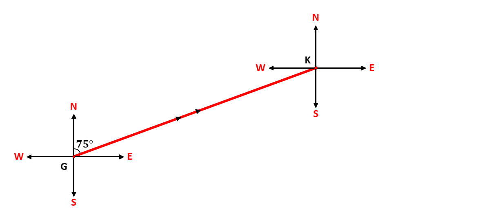
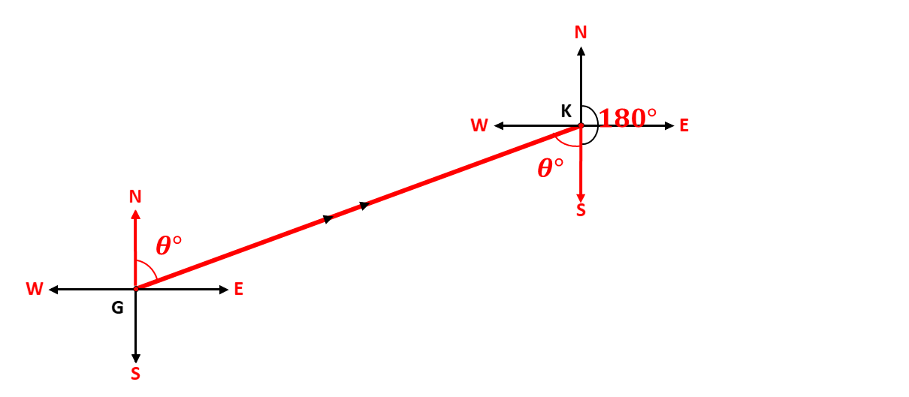
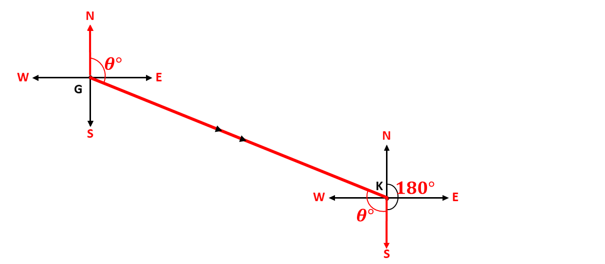
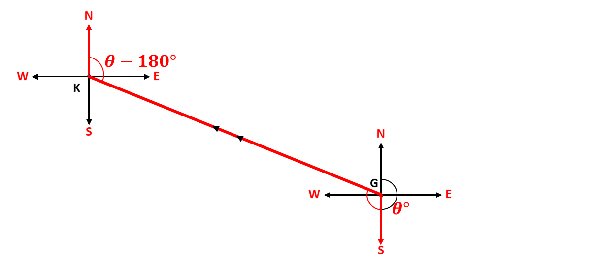
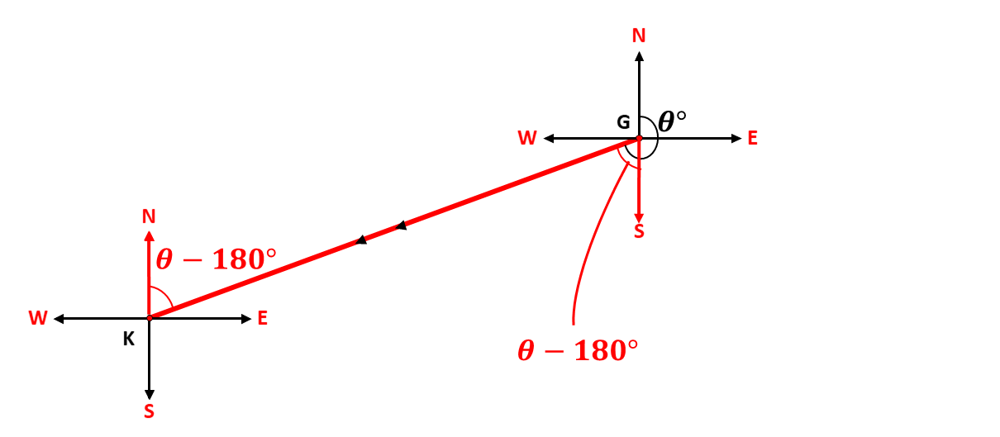

In our lesson on bearings, we learnt that bearings give the direction of one point from another.
Given any two (2) points in a plain, each point will have their own cardinal points. Consider the points \(G\) and \(K\) in the diagram below:

The diagram above describes the bearing of a point \(K\) from the initial point \(G\). We say, that the bearing of \(K\) from \(G\) is \(75^\circ\). Imagine someone facing North, turning in an angle of \(75^\circ\) and walking to the point \(K\).
If the person wanted to walk back to his initial position, he will need the reverse of the initial bearing, which we call, back-bearing.
Back bearing is the reverse of any given bearing. When the bearing of point \(B\) from point \(A\) is given as \(\theta\), the back bearing is the reverse of the bearing \(\left( \theta \right)\), that is, the bearing of \(A\) from \(B\).
If the angle, \(\theta^\circ\), is less than \(180^\circ\), the back bearing is given as \[\theta + 180\]
If the angle, \(\theta^\circ\), is greater than \(180^\circ\), the back bearing is given as \[\theta - 180\]
We use the concept of alternate angles and angles on a straight line to learn about back bearings.
When the given bearing, \(\theta^\circ\), is less than \(180^\circ\), and formed between the north line and the east line, the back bearing is given as \(\theta + 180\). Consider the diagram below:

The angle \(\theta\) alternates with the angle formed by the line of travel and the South cardinal point, and the angle from the North to the south is equivalent to the angle on a straight line. Adding them together gives a back bearing of \[\theta + 180^\circ\]
When the given bearing, \(\theta^\circ\), is less than \(180^\circ\), and formed between the east line and the south line, the back bearing is given as \(\theta + 180\). Consider the diagram below:

The angle \(\theta\) alternates with the angle formed by the line of travel and the South cardinal point, and the angle from the North to the south is equivalent to the angle on a straight line. Adding them together gives a back bearing of \[\theta + 180^\circ\]
When the given bearing, \(\theta^\circ\), is greater than \(180^\circ\), and formed between the north line and the west line, the back bearing is given as \(\theta - 180\). Consider the diagram below:

In the diagram above, the back-bearing from \(K\) alternates with the part of the angle \(\theta\) formed between the line of travel and the south line at \(G\). Hence, subtracting the residual angle gives \[\theta - 180^\circ\]
When the given bearing, \(\theta^\circ\), is greater than \(180^\circ\), and formed between the west line and the south line, the back bearing is given as \(\theta - 180\). Consider the diagram below:

In the diagram above, the back-bearing from \(K\) alternates with the part of the angle \(\theta\) formed between the line of travel and the south line at \(G\). Hence, subtracting the residual angle gives \[\theta - 180^\circ\].
Learn about alternate angles, the angles that give shapes resembling the letter \(Z\).
Remember
If the angle, \(\theta^\circ\), is less than \(180^\circ\), the back bearing is given as \[\theta + 180\]
If the angle, \(\theta^\circ\), is greater than \(180^\circ\), the back bearing is given as \[\theta - 180\]
Test yourself on what you have learnt so far. Click on the link below when you are ready.
Kindly contact the administrator on 0208711375 for the link to the test.
For sponsorship or advertisement kindly call or whatsapp on 0208711375 or 0249969740.